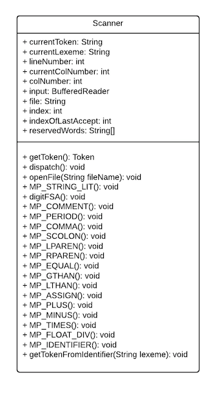

UML
As noted elsewhere, a clear outline was given to all teams for the design and implementation of the scanner, parser, and semantic analyzer. With approval, teams were allowed to vary their actual designs and implmementations. The scanner was the only module that required UML ahead of time. That is provided on this page along with the UML for the scanner as it actually was implemented.
Scanner UML (Before Coding)

After our implementation of the scanner, we realized we wanted to make everthing static. Using a static variable/function allows the extent of the variable/function to extend through the entire program. For example, instead of creating a new instance of our tokens we can directly reference them since they belong to the class itself.